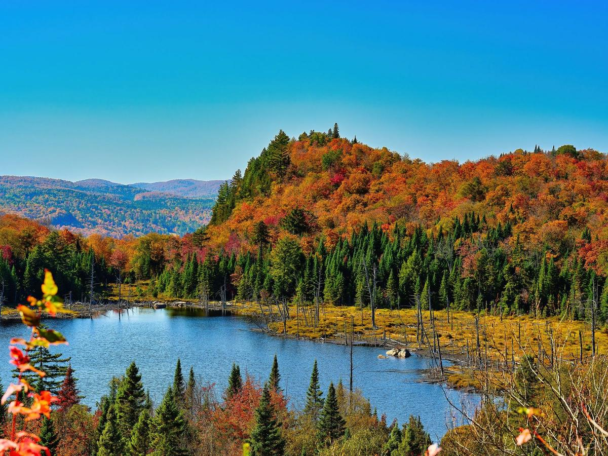

Respirer le grand air sans ouvrir le portefeuille : le programme Accès nature offre l'accès journalier gratuit aux parcs régionaux participants, jusqu'au 31 octobre 2026. Gratuit, sur réservation.

La réservation en ligne est gratuite, mais elle doit être faite au moins 24 heures à l'avance. Choisissez votre parc et votre journée, réservez votre accès, et présentez-vous à l'accueil le jour venu — c'est tout.
Le programme se termine le 31 octobre 2026 : c'est la dernière semaine complète pour en profiter — les belles journées d'automne sont le moment idéal.
Parc régional de la Rivière-du-Nord — 750, chemin de la Rivière-du-Nord, Saint-Jérôme (J7Y 5G2), le plus proche pour les gens de Saint-Jérôme.
Parc régional du Bois de Belle-Rivière — Mirabel.
Parc régional Éco Laurentides, parc régional Val-David–Val-Morin, parc régional de Kiamika et parc régional de la Montagne du Diable — pour pousser l'exploration plus au nord.
Jetez un œil à la météo des Laurentides pour choisir la bonne journée, au prix de l'essence du jour pour le trajet, et à quoi faire ce week-end pour compléter la sortie.
Renseignements vérifiés le 19 octobre 2026. Sources : Tourisme Laurentides (laurentides.com) et Espaces (espaces.ca).